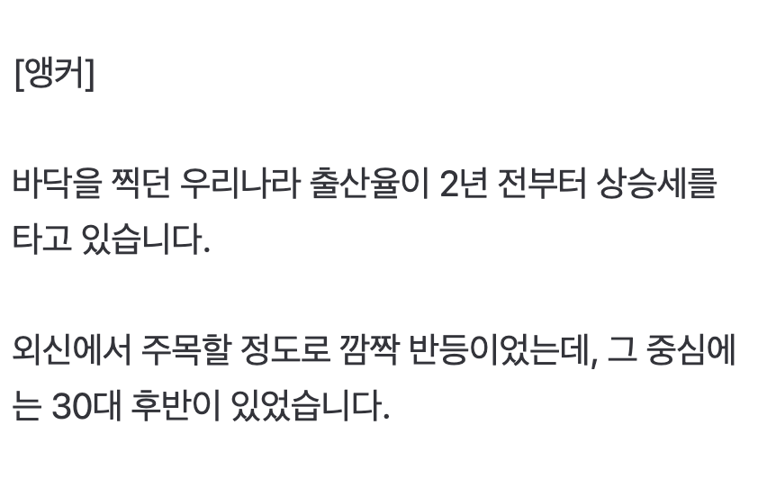
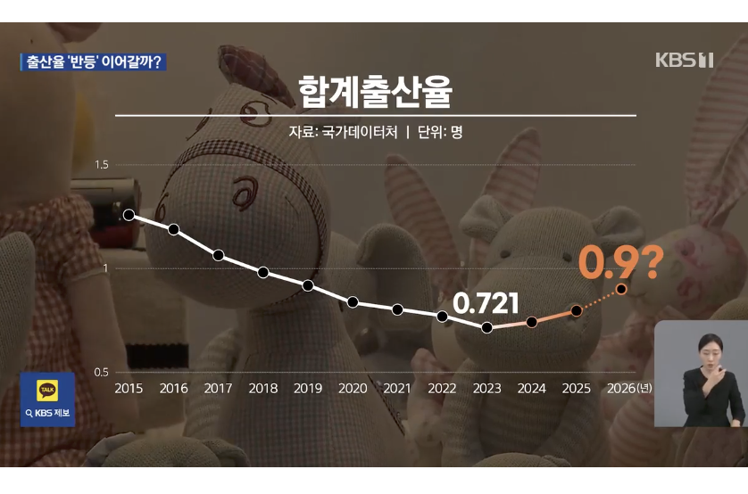
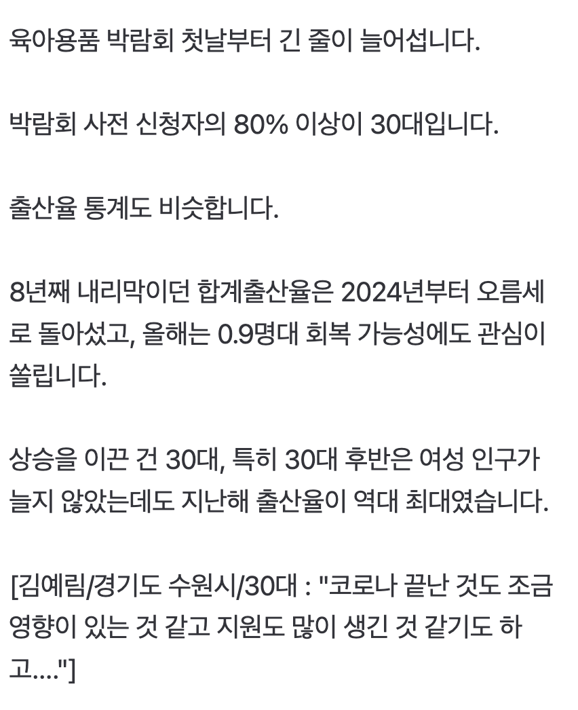
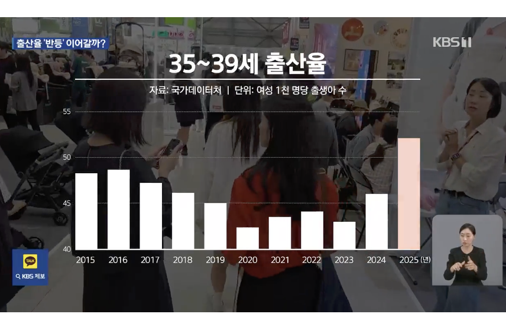
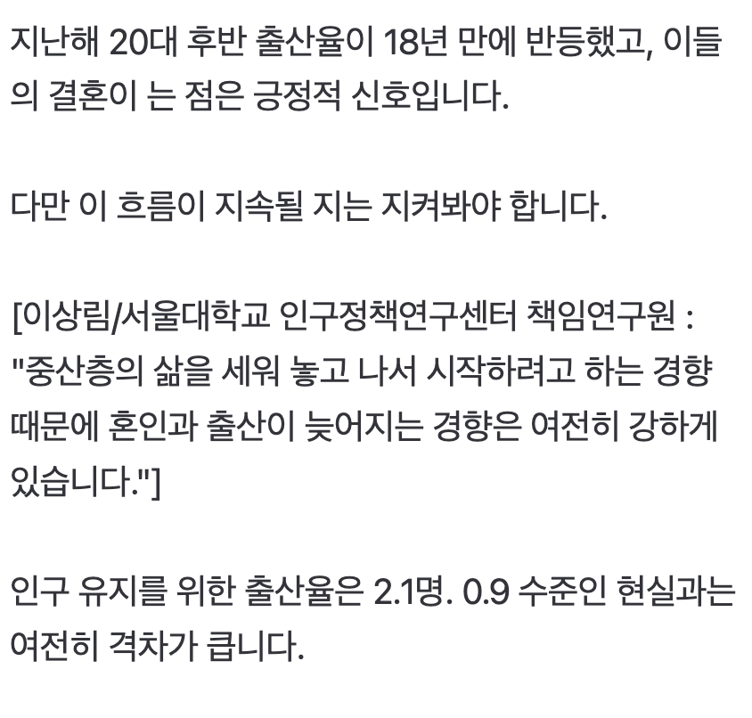

https://n.news.naver.com/mnews/article/056/0012264420
이 나라 출산율의 중심을 30대가 지키고 있어요!!!





https://n.news.naver.com/mnews/article/056/0012264420
이 나라 출산율의 중심을 30대가 지키고 있어요!!!
1베이비 1억원씩 현금으로 줘라. 여성부에 할당된 그지같은 예산 싸그리없애고 지자체에 할당된 어줍지않은 출산장려정책금 없애고 그냥 현금 일시불 중앙정부에서 지급해라.
일괄출금안되도록 안전장치 만들어서 부작용 생각말고 꼭 돈으로 줘라. 그 어떤 부작용도 벌어질 출산률 폭등에 비하면 아주 작은 해악일거다
공포에 사라는게 주식에만 통용되는게 아니었구만
30대에 자본이 생기니까 결혼들 하는구만
둘째셋째에 대해 성별 고를 수 있게하면 출산률 조금 더 오를듯
안낳던 시기 지나고
체념하고 다들 낳는것도 있는거 같던데
원래 긴 그래프 보면 급락에 급반등은 있긴해
잠깐이지만
걍 일본이나 다른 유럽 선진국 따라가는거 같던데
1.점대 초중반 왔다갔다 하지 않을까?
더 버티면 좆댄다는 위기의식 발동인가?
노산위기와 폐경위기로 애를 안낳는게 아니라 못 낳게 되는 것이니.